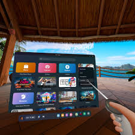

Descripción del Meta Quest 3
El Meta Quest 3 es un visor de realidad virtual y aumentada de última generación desarrollado por Meta.
Este dispositivo permite a los usuarios sumergirse en experiencias interactivas de alta calidad, combinando elementos virtuales con el mundo real. Con gráficos mejorados, mayor comodidad y opciones de realidad mixta, el Quest 3 está diseñado tanto para el entretenimiento como para aplicaciones profesionales y educativas.
Beneficios
- Inmersión total: El Quest 3 ofrece una experiencia inmersiva de alta calidad gracias a su resolución avanzada y su tecnología de seguimiento de movimiento.
- Realidad mixta: Integra elementos de la realidad aumentada permitiendo que el usuario vea tanto el mundo físico como el digital en tiempo real.
- Interactividad intuitiva: Los controles intuitivos permiten una interacción fluida, mejorando la accesibilidad y usabilidad para diferentes usuarios.

Evolución del Meta Quest 3
El Meta Quest 3 es la evolución de los modelos anteriores, como el Quest y el Quest 2. Comparado con estos modelos, el Quest 3 ha mejorado en varios aspectos:
- Mejor resolución y gráficos: El Quest 3 ofrece gráficos más realistas y detallados, mejorando la calidad de la experiencia.
- Más ligero y cómodo: Se ha diseñado para ser más ligero y cómodo, permitiendo un uso prolongado sin molestias.
- Mayor integración de realidad aumentada: La tecnología de realidad mixta está más integrada, permitiendo una experiencia inmersiva en el mundo real y virtual al mismo tiempo.
El Quest 3 reemplaza y mejora dispositivos más antiguos, que solo ofrecían experiencias de realidad virtual aisladas, permitiendo ahora una mayor integración y versatilidad.
.jpeg)